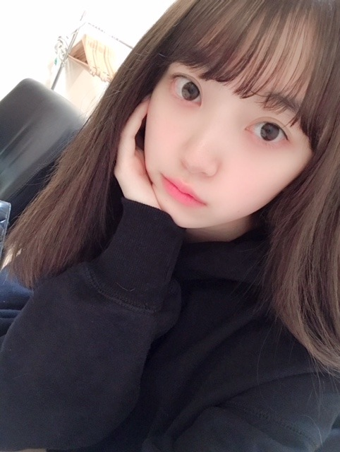

2019/0209Sat犬の毛が目立つよ
私服でパーカーをよく着るのですが
特に黒色のパーカーが好きで
いろんなブランドのを今は集めています☺︎
とにかくラクチンだし
サッとフードを被れば移動中は眠れるし...
有り難い。

(すっぴん失礼します)
(あ、髪きりました)あすかと美月は気づいてくれた
ちなみに携帯ケースも黒で
最近は黒に落ち着くパターンが多いです

夏になったら今まで通り白ばかりになるんだろうけど...
黒の魅力もようやくわかってきて
あー大人やーって思っています☺︎笑
かわいいパーカーがあったら
ぜひ教えてください✨

キラキラ×くすみブルーは
私が世界イチ好きな組み合わせ！
では！
ps.梅干し毎日食べ過ぎて梅干しになりそう...
2019/02/09 18:12
コメント(455)
未央奈～ こんにちは
連日のブログ更新ありがとうございます。
「すっぴん失礼？」 全然、失礼どころか、どれだけ癒されることか、やっぱり「もと」がいいから‥‥。というより、私の印象は初めてお会いした時から「透き通っている」の一言に尽きます。これは、今も変わっていませんよ。
そして、屈託のない笑顔。これからもそんな未央奈でいてくださいね。
超一級の寒波の襲来で、今日はものすごく寒かったそうですが、大丈夫でしたか？ 寒さと言うと、西武ドームでの３rdバスラを思い出します。今年もいよいよバスラが近づいてきました。さすがにこちらのドームは空調が効いているので大丈夫だと思いますが、それまでに風邪なんかひいちゃダメですよ。体調調整えておいてくださいね。
では、お会いできること楽しみにしています。
連日のブログ更新ありがとうございます。
「すっぴん失礼？」 全然、失礼どころか、どれだけ癒されることか、やっぱり「もと」がいいから‥‥。というより、私の印象は初めてお会いした時から「透き通っている」の一言に尽きます。これは、今も変わっていませんよ。
そして、屈託のない笑顔。これからもそんな未央奈でいてくださいね。
超一級の寒波の襲来で、今日はものすごく寒かったそうですが、大丈夫でしたか？ 寒さと言うと、西武ドームでの３rdバスラを思い出します。今年もいよいよバスラが近づいてきました。さすがにこちらのドームは空調が効いているので大丈夫だと思いますが、それまでに風邪なんかひいちゃダメですよ。体調調整えておいてくださいね。
では、お会いできること楽しみにしています。
2コメ目です！！
私もみおなが髪切ったら切ろっかなって思ってたので切ろうかなぁ…
どんな髪型がオススメですか？？
みおなと一緒にしたいです！！
私もみおなが髪切ったら切ろっかなって思ってたので切ろうかなぁ…
どんな髪型がオススメですか？？
みおなと一緒にしたいです！！
パーカー着ないから未央奈の参考にして着てみようかな☺︎
また買ったやつupして〜
また買ったやつupして〜
カワイイ写真ありがとう♪＼(^o^)／
応援してるでー！(^_-)
応援してるでー！(^_-)
黒い服は輪郭をボカすから痩せて見えて良いよ、キティちゃんの理論だけど(^^)
梅干し食べすぎてて、体から梅の匂いがするようになってそう
梅干し食べすぎてて、体から梅の匂いがするようになってそう
かわいいカッパは知りませんが、くすみブルーの衣装のモチーフはウェッジウッドの陶器です。梅干しになったら「男梅」のCMに出られますね、応援しています。
堀ちゃん、ブログ更新ありがとうございます。
パーカー、黒なら中田敦彦さんのブランドがおすすめです！
マジでかっこいいですよ。
パーカー、黒なら中田敦彦さんのブランドがおすすめです！
マジでかっこいいですよ。
僕も黒好きです！
黒い服は動物の毛が目立つよねー
出先にまで付いてきてることあるからね！
でもパーカーは好き♪
やることたくさんあって忙しいと思うけど
一度時間を取ってゆーっくり寝たりして
目を休めてね◎
体調崩してみおなに悔しい思いを
してほしくないもん
みおなすっぴんもかわいい！
出先にまで付いてきてることあるからね！
でもパーカーは好き♪
やることたくさんあって忙しいと思うけど
一度時間を取ってゆーっくり寝たりして
目を休めてね◎
体調崩してみおなに悔しい思いを
してほしくないもん
みおなすっぴんもかわいい！
1枚目ばーーーーーかかわいいありえんかわいい好きだ！！
wind and seaのパーカーおすすめですよー。
シンプルなデザインで可愛いです。
シンプルなデザインで可愛いです。
かわゆ(^・^) がんばれ～(^^)/
こんばんは。ブログ更新ありがとうございます。
黒のパーカーかー。私はTシャツからコートまで黒ばかり着させられているので、他の色が着たいです。もともとシンプルな無地の服が好きで、昔は水色とか緑とかも来ていました。赤も好きです。いろんな服にチャレンジしていましたが、実家に帰ってからはカラフルな服はみんな捨てられてしまいました。あー、一人暮らしに戻りたい。
梅干、最近食べてないなぁ、だから体調が良くないのかな。
ではまた。
黒のパーカーかー。私はTシャツからコートまで黒ばかり着させられているので、他の色が着たいです。もともとシンプルな無地の服が好きで、昔は水色とか緑とかも来ていました。赤も好きです。いろんな服にチャレンジしていましたが、実家に帰ってからはカラフルな服はみんな捨てられてしまいました。あー、一人暮らしに戻りたい。
梅干、最近食べてないなぁ、だから体調が良くないのかな。
ではまた。
パーカー、良いですね。
僕は暖房の温かい空気が嫌いなので、むしろ部屋着がパーカーです（ブランドはおじさん向けなので…割愛します）。
パーカーのフードは首周りの寒さをしのげます。
本当につい最近、寒暖差による免疫力の低下を防ぐ為に、えりまきやマスクなどとともに推奨されています。
コートのフードとともに用いて、寒暖差を乗り切りましょう。
ファイトですよ、未央奈。
寒さにはしっかり対策をしてね。痩せ我慢は厳禁だよ！
ところで、コホン。愛する未央奈さん。
梅干しの食べ過ぎは要注意ですよ。
塩分の取りすぎはむくみの原因。
スッキリ笑顔の未央奈でカメラの前に立つ為には、塩分のコントロールも身につけましょうね ♡ (∩ˊᵕˋ∩)
梅干しの代用となるアルカリ性食品は、黒酢やリンゴ酢（お湯割り&お砂糖ブレンド）、他には普通の酢の物などです。
お酢にもクエン酸の効果（筋肉疲労の軽減など）が期待できますが、他にもレモン果汁の飲料などを代わりにして、酸っぱい味への欲求を満たしましょう。
ではでは。いつも未央奈の幸せを願っていますよ ( ˶˙ᵕ˙˶ )
未央奈のウインクが好きです。
ズッキューーン！ ｍ9 (｀≧ ω・´) ♡
僕は暖房の温かい空気が嫌いなので、むしろ部屋着がパーカーです（ブランドはおじさん向けなので…割愛します）。
パーカーのフードは首周りの寒さをしのげます。
本当につい最近、寒暖差による免疫力の低下を防ぐ為に、えりまきやマスクなどとともに推奨されています。
コートのフードとともに用いて、寒暖差を乗り切りましょう。
ファイトですよ、未央奈。
寒さにはしっかり対策をしてね。痩せ我慢は厳禁だよ！
ところで、コホン。愛する未央奈さん。
梅干しの食べ過ぎは要注意ですよ。
塩分の取りすぎはむくみの原因。
スッキリ笑顔の未央奈でカメラの前に立つ為には、塩分のコントロールも身につけましょうね ♡ (∩ˊᵕˋ∩)
梅干しの代用となるアルカリ性食品は、黒酢やリンゴ酢（お湯割り&お砂糖ブレンド）、他には普通の酢の物などです。
お酢にもクエン酸の効果（筋肉疲労の軽減など）が期待できますが、他にもレモン果汁の飲料などを代わりにして、酸っぱい味への欲求を満たしましょう。
ではでは。いつも未央奈の幸せを願っていますよ ( ˶˙ᵕ˙˶ )
未央奈のウインクが好きです。
ズッキューーン！ ｍ9 (｀≧ ω・´) ♡
「黒の魅力もようやくわかってきて
あー大人やーって思っています」
どういうこと？？？ 「黒の魅力」？？？ 黒？？？
あー大人やーって思っています」
どういうこと？？？ 「黒の魅力」？？？ 黒？？？
みおなちゃんブログありがとう！
ブログ多くてうれしいよ！
明日もがんばります！
ブログ多くてうれしいよ！
明日もがんばります！
未央奈～こんばんは！
ぽてとです！
パーカー良いよね！！
自分もパーカー好き♪
着てるだけで落ち着くねん( ☆∀☆)
毎日寒いから気をつけてね！
じゃあ、またね！
ぽてとです！
パーカー良いよね！！
自分もパーカー好き♪
着てるだけで落ち着くねん( ☆∀☆)
毎日寒いから気をつけてね！
じゃあ、またね！
未央奈～☆☆
すっぴんの未央奈も本当に可愛いなー
服の色によって印象とか雰囲気が違って見えるけど、
黒色は色味がない分、未央奈の可愛さだったり、綺麗さだったり、
未央奈自身が際立つ気がする。
あ、今のところは未央奈が梅干しには見えないから安心して。笑
すっぴんの未央奈も本当に可愛いなー
服の色によって印象とか雰囲気が違って見えるけど、
黒色は色味がない分、未央奈の可愛さだったり、綺麗さだったり、
未央奈自身が際立つ気がする。
あ、今のところは未央奈が梅干しには見えないから安心して。笑
ネオンサインのショート丈の黒パーカーおすすめですよ！
ブログ更新ありがとう！
髪切っても未央奈かわいい、ほんとなんでもあうよね
俺もパーカー好き
来週の個握楽しみー
髪切っても未央奈かわいい、ほんとなんでもあうよね
俺もパーカー好き
来週の個握楽しみー
ワタボコリ大好き〜！
黒色←シンプルだからこそ、どんな色にも合わせやすくて便利だよねぇ♪♪ そして、すっぴんでも抜群に綺麗な堀ちゃん(〃▽〃) あったかく&ゆっくり体休めてあげて、明日も1日堀ちゃんが楽しく過ごせますように(*´-`)ﾉ
beamsとゴーストのコラボの黒パーカーカッコいいんで是非！
堀さん、こんばんは。
可愛いすっぴんから美しいプリンセスまで堀さんの魅力は幅広いんですね。2枚目の写真見て思ったのが、顔が綺麗なのは鏡が無きゃ見れないけど手が綺麗なのは大概視界に入ってるじゃないですか。自分でも綺麗だと思うのか、はたまた慣れるものなのか疑問になりました。
犬の毛は生え変わりの時期に黒い服で抱くとすごいですよね。以前、実家の犬の普段撫でない腿の後ろあたりをシャンプーするみたいにワシャワシャしたら毛が凄い抜けて、、、そういえばザンビ見ました。
ザンビが出たせいで生まれた登場人物たちの絆が終盤どうなっていくのか楽しみです。最後は楓が究極の選択を迫られるのかな、なんて予想してます。
梅干しになるで何故か思い出したんですけど、インクレディブルファミリーの特典映像の「Bao」って短編が、それ見るの何度目なんだよって思って泣けるので、梅干しになる前にお勧めです。
先日、僕は潔癖症のゾンビくらい自尊感情が無くなるできごとが有ったんですけど、低きゃ低いほど堀さんのブログやモバメ等を見た時の嬉しさが増すと気付けたので良かったです。ブログ更新してくれてありがとうございます。
可愛いすっぴんから美しいプリンセスまで堀さんの魅力は幅広いんですね。2枚目の写真見て思ったのが、顔が綺麗なのは鏡が無きゃ見れないけど手が綺麗なのは大概視界に入ってるじゃないですか。自分でも綺麗だと思うのか、はたまた慣れるものなのか疑問になりました。
犬の毛は生え変わりの時期に黒い服で抱くとすごいですよね。以前、実家の犬の普段撫でない腿の後ろあたりをシャンプーするみたいにワシャワシャしたら毛が凄い抜けて、、、そういえばザンビ見ました。
ザンビが出たせいで生まれた登場人物たちの絆が終盤どうなっていくのか楽しみです。最後は楓が究極の選択を迫られるのかな、なんて予想してます。
梅干しになるで何故か思い出したんですけど、インクレディブルファミリーの特典映像の「Bao」って短編が、それ見るの何度目なんだよって思って泣けるので、梅干しになる前にお勧めです。
先日、僕は潔癖症のゾンビくらい自尊感情が無くなるできごとが有ったんですけど、低きゃ低いほど堀さんのブログやモバメ等を見た時の嬉しさが増すと気付けたので良かったです。ブログ更新してくれてありがとうございます。
RIPNDIPってとこのパーカーはかわいいです！
個人的に好きかな
個人的に好きかな
ホーリー体調大丈夫ですか？
寒暖差が激しいので体調に気をつけて。
寒暖差が激しいので体調に気をつけて。
いつも可愛い写真ありがとう〜
体調に気を付けて頑張ってねー
体調に気を付けて頑張ってねー
未央ちんお疲れ様です。すっぴんも凄く可愛いくて、化粧している時とあまり変わらないね‼️まさに未央ちんは私の理想の女性で男女や年上年下関係なく人として尊敬しています。遥かなるブータンのMVの時未央ちんが来ていたTシャツ可愛いくて、ほしいなあと思っています。未央ちんの一番行きたいフィンランドは小学校から大学までの学費や医療費が無料で、世界の幸福度ナンバー1ってTVで言ってたよ。でも、冬は昼でも真っ暗で氷点下だそうですね。行くなら少しでも暖かい時に行ってほしいなあ。特に未央ちんは体調くずしやすいから気温の変化が激しいと体調くずすと思うので。先にかずみんが写真集でフィンランドにいきましたね。何かフィンランドについて色々聞いたり、お土産もらったのかなあ
未央奈ちゃん。ブログ更新ありがとう！ パーカー わたしは、時たま着ます。オフショルの服素敵ですね。
黒のパーカー自分も良く着がちなので気持ちよく分かります。ずっとRIPNDIPの服が好きでパーカーもそこのを買うんですけど、キャラが可愛くてオススメですよ。そろそろ日本にも原宿に一号店が出来るみたいなので是非。
写真と文章のバランス絶妙ですね！
未央奈さんのブログ読みやすいです。
黒、黒、からのキラキラ写真も綺麗で良い感じです。
未央奈さんのブログ読みやすいです。
黒、黒、からのキラキラ写真も綺麗で良い感じです。
僕もパーカー好きです。よく
marvelのパーカー好きで着てます。
堀ちゃんがmarvel着たら絶対似合う！
すっぴんめちゃくちゃかわいいですね。
いつも応援しています。頑張って下さい。
marvelのパーカー好きで着てます。
堀ちゃんがmarvel着たら絶対似合う！
すっぴんめちゃくちゃかわいいですね。
いつも応援しています。頑張って下さい。
未央奈ちゃん更新ありがとー！
相変わらずお綺麗ですっ！
可愛い！
パーカーいいよねー。
自分も最近選びがち。
楽でいい！
黒も好きだなー。
他と合わせやすいし良き。
楽が一番！
ではでは
今日も素敵な１日になりますよーに。
相変わらずお綺麗ですっ！
可愛い！
パーカーいいよねー。
自分も最近選びがち。
楽でいい！
黒も好きだなー。
他と合わせやすいし良き。
楽が一番！
ではでは
今日も素敵な１日になりますよーに。
human madeっていうブランドのパーカー可愛いのばっかりだよ！
アップありがとうございます。
また1日頑張ろうっていう気になります。
また1日頑張ろうっていう気になります。
堀ちゃん
おはようございます
それですっぴんというのは反則級に可愛いですよ
すっぴんで失礼しますというよりむしろウェルカムですよ笑
黒い格好は、無難でとても落ち着きますよね
8割黒の2割白の格好が自分の中の好きな組み合わせです
女子のパーカーとかでフード被ってる姿が可愛くてキュンとします
youth loser 1997というブランドのパーカーが堀ちゃんに似合うと思うのでおすすめします（堀ちゃんなら知ってるかもしれないけど）
昨日は雪だったけど今日は晴れたからお出かけ日和だね
今日も頑張って下さい
ありがとうございました
おはようございます
それですっぴんというのは反則級に可愛いですよ
すっぴんで失礼しますというよりむしろウェルカムですよ笑
黒い格好は、無難でとても落ち着きますよね
8割黒の2割白の格好が自分の中の好きな組み合わせです
女子のパーカーとかでフード被ってる姿が可愛くてキュンとします
youth loser 1997というブランドのパーカーが堀ちゃんに似合うと思うのでおすすめします（堀ちゃんなら知ってるかもしれないけど）
昨日は雪だったけど今日は晴れたからお出かけ日和だね
今日も頑張って下さい
ありがとうございました
おはようございます！
僕は、無地のイエローパーカーを持ってます！
ブログの更新ありがとう！
僕は、無地のイエローパーカーを持ってます！
ブログの更新ありがとう！
未央奈ブログ更新ありがとう！
パーカーは便利だよね！
俺も黒のパーカーは良く着るよ！
使いやすいんだよね！
髪切った未央奈可愛い！
またコメントします！
パーカーは便利だよね！
俺も黒のパーカーは良く着るよ！
使いやすいんだよね！
髪切った未央奈可愛い！
またコメントします！
小嶋陽菜さんのパーカーは、持ってるのかな？
あれも可愛いよ。
あれも可愛いよ。
更新ありがと～
「すっぴんって嘘でしょ！？」ってくらいすっぴんでも可愛い
私も黒大好き～！基本的に目立ちたくないから、黒着てると存在感なくなるし(笑)平日は制服だけど、私服は黒とか茶色とか暗い色が多いかな。あと、服だけじゃなくて髪の色も黒が好き！黒髪美少女を見るのが大好きです(笑)
どーでもいいことでごめんなさい(笑)
髪切ったんだね～！(*≧з≦)ｶﾜｲｲ
お仕事頑張ってね～
「すっぴんって嘘でしょ！？」ってくらいすっぴんでも可愛い
私も黒大好き～！基本的に目立ちたくないから、黒着てると存在感なくなるし(笑)平日は制服だけど、私服は黒とか茶色とか暗い色が多いかな。あと、服だけじゃなくて髪の色も黒が好き！黒髪美少女を見るのが大好きです(笑)
どーでもいいことでごめんなさい(笑)
髪切ったんだね～！(*≧з≦)ｶﾜｲｲ
お仕事頑張ってね～
みおなかわいすぎる！
バスラ1.2日目行きますー
バスラ1.2日目行きますー
へい未央奈(･∀･∩)
オシャレ番長から楽ちんって言葉を頂くとは(^^;)
俺もその場にいたら未央奈が髪を切ったの気づいたよ
あすか様は未央奈の事を四六時中観察してるからだよ。笑
俺は漆黒の赤が良き(*´ー｀*)
劇場版七つの会議観てきたよー七つの会議もキャストが豪華だった(^^)
今回映画を観る上で、表情や口元なんかも意識して観察したりした..おでこのムッてした時の皺の出来方や、口角なんかも注意して(∀)
七つはドラマ(主人公が違うのかな..ドラマは原島、劇場版は八角)もあるみたいだから、劇場版、ドラマ、原作と、それぞれを比較して違いを愉しむのも面白いと思う
がんばみおなー
オシャレ番長から楽ちんって言葉を頂くとは(^^;)
俺もその場にいたら未央奈が髪を切ったの気づいたよ
あすか様は未央奈の事を四六時中観察してるからだよ。笑
俺は漆黒の赤が良き(*´ー｀*)
劇場版七つの会議観てきたよー七つの会議もキャストが豪華だった(^^)
今回映画を観る上で、表情や口元なんかも意識して観察したりした..おでこのムッてした時の皺の出来方や、口角なんかも注意して(∀)
七つはドラマ(主人公が違うのかな..ドラマは原島、劇場版は八角)もあるみたいだから、劇場版、ドラマ、原作と、それぞれを比較して違いを愉しむのも面白いと思う
がんばみおなー
堀ちゃん、お疲れ様でした。
二日連続ブロク更新してありがとう。
すっぴんでもめちゃくちゃかわいいよ。
二日連続ブロク更新してありがとう。
すっぴんでもめちゃくちゃかわいいよ。
す
っ
ぴ
ん
カ
ワ
エ
エ
！
！
！
！
！
！
っ
ぴ
ん
カ
ワ
エ
エ
！
！
！
！
！
！
みおなちゃん！すっぴん可愛すぎる(＞＜)
キラキラとくすみブルーいいよね！！
キラキラとくすみブルーいいよね！！
humanmadeってブランドのパーカーとかスウェット可愛いよ！
堀さん寒い日が続きますが頑張ってください！
お目目きらりん☆レボリューションなの⊂(ο･㉨･ο）⊃”くまﾃﾞｽ…
溜息出るほどすっぴんが可愛い。


未央奈はパーカーが好きって言ってたから、数年ぶりにパーカーを買って着てみたよ
パーカーは着心地が良くて楽だし、何よりも暖かくて、パーカーがすっかり気に入っちゃったよ。
パーカーはチャンピオンのパーカーが好きで、持っているはほとんどがチャンピオンだよ。
「黒い服は犬の毛が目立つ」その気持ち分かる。俺の家には猫がいるから、黒い服だと猫の毛が目立つんだよね。
黒い服が好きだからよく着るんだけど、毛を取るためにコロコロとガムテープが必需品になってるよ。
この前のレコメンで黒い服を着ていたけど、黒は未央奈にスッゴく似合うよ。
それに白も似合うし、ピンク、ブルーも未央奈に似合うと思うよ。
ゴロ～